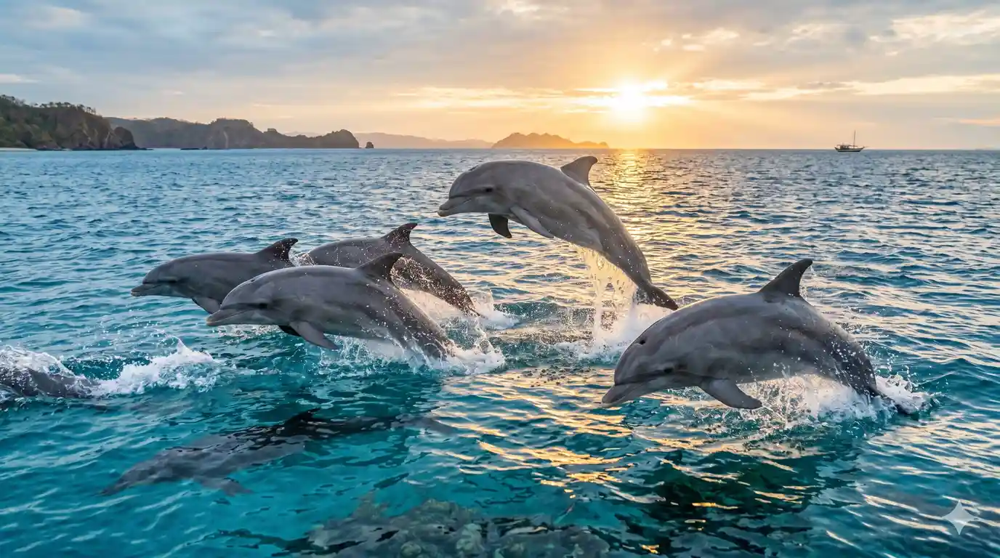
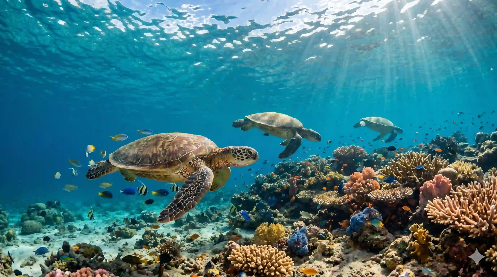

From the South Pacific to the North Atlantic, our teams design and launch ecological restoration plans that produce measurable, lasting changes.
Working globally to protect critical marine zones.
Traditional coral restoration is slow. We employ micro-fragmentation—cutting coral colonies into tiny pieces, stimulating rapid growth up to 40 times faster.
Once matured in land-based climate-controlled tanks, these micro-fragments are joined together on artificial reef grids. Over time, they fuse into unified, spawning, climate-resilient limestone habitats that harbor millions of tropical marine organisms.


Plastics degrade into dangerous microparticles that enter marine networks. Our ocean cleanup campaigns employ interceptor barriers anchored in river estuaries, preventing waste from ever entering high seas.
We complement technology with community drives, mobilizing thousands of local volunteers to clear beach microplastics. All recovered waste is sorted, processed, and recycled into durable commercial ocean products.
Entangled seals, stranded cetaceans, and oiled seabirds need urgent veterinary aid. Our organization coordinates satellite networks and dispatches mobile rescue vessels.
Rescued animals are brought to state-of-the-art coastal clinics. Here, they undergo surgery, fluid rehabilitation, and behavioral training before they are successfully tagged and released back to deep ocean currents.

Track our quantitative success against defined ecological benchmarks. These metrics represent real, audited progress.